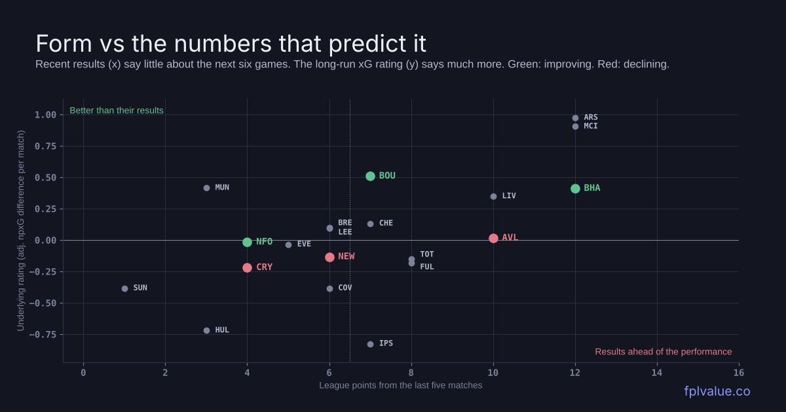

Which teams are really in form, and which runs to ignore
"Form" usually means the last five results. We tested that against twelve seasons of Premier League data, alongside about thirty other measures of whether a team is getting better or worse. Most of them turned out to be noise. This piece uses the few that aren't to pick out the teams that are genuinely improving or declining, and what that means for your squad.

What actually predicts form
We took every Premier League team-match from 2014/15 onwards (7,388 of them) and asked one question: which numbers, known before kick-off, best predict a team's next six games? We fitted on 2015/16–2020/21 and tested on the five seasons since.
| Predictor of next-6 goal difference | Error cut |
|---|---|
| Long-run xG rating (opponent-adjusted, half-life 15 matches) | 35% |
| Goal difference, last 10 | 23% |
| Goal difference, last 5 | 15% |
| Points, last 5 | 12% |
A long-run xG rating is roughly three times as useful as last-five points. Adding recent form on top of it doesn't help at all. That's true for last-five points, last-five goal difference, a three-match xG trend and the slope of the last ten games. None of them improved the prediction once the rating was in. A team's last month mostly tells you about its last month.
Three things are worth knowing beyond the rating:
The right window is 10–15 matches. Weighting recent games more heavily makes predictions worse. A half-life of 3 matches was 10% less accurate than 15, and 5 matches was 4% worse. Real change shows up, but it takes a couple of months to separate from noise.
Territory adds a little. Teams that take a bigger share of the shots, or get the ball into the final third more often than their opponents (field tilt), do slightly better than their xG rating alone suggests, by about 0.15 goals per game per standard deviation. The effect is small and the confidence interval crosses zero, but it pointed the same way in both halves of the data.
xG built on big chances fades. Teams whose xG comes from a few big chances (0.3 xG or more) do slightly worse than their rating says. A rating built on lots of ordinary shots holds up better.
The site's fixture model already rates teams this way, so the projections already reflect it. The rest of this piece shows where that rating and the league table currently disagree.
Results vs rating, all 20 teams
The chart up top plots each team's last five results against its xG rating. Teams above the line and to the left are performing better than their results. Teams to the right and lower down have results that are ahead of their performance. "vs 25/26" is how far the rating has moved since the end of 2025/26. Because it's a 15-match average, a big move means a sustained change rather than one good week.
| Team | Last 5 | Pts | Rating | vs 25/26 | Shots | Tilt |
|---|---|---|---|---|---|---|
| Arsenal | WLWWW | 21 | +0.97 | −0.07 | 60% | 71% |
| Man City | WWWWL | 21 | +0.90 | +0.09 | 61% | 72% |
| Bournemouth | DLLWW | 9 | +0.51 | +0.18 | 54% | 52% |
| Man United | LDDDL | 7 | +0.42 | −0.09 | 57% | 55% |
| Brighton | WWWWL | 16 | +0.41 | +0.18 | 57% | 54% |
| Liverpool | DWLWW | 15 | +0.35 | −0.06 | 57% | 58% |
| Chelsea | DLWWL | 13 | +0.13 | −0.04 | 54% | 54% |
| Brentford | DWDLD | 11 | +0.10 | +0.03 | 45% | 46% |
| Leeds | WDLDD | 11 | +0.10 | +0.03 | 48% | 42% |
| Aston Villa | LWDWW | 11 | +0.02 | −0.16 | 48% | 51% |
| Nott'm Forest | WLLLD | 6 | −0.02 | +0.25 | 51% | 47% |
| Everton | DWDLL | 10 | −0.03 | +0.10 | 47% | 44% |
| Newcastle | LWLLW | 11 | −0.13 | −0.19 | 48% | 52% |
| Spurs | DLDWW | 9 | −0.15 | −0.07 | 50% | 49% |
| Fulham | DDLWW | 8 | −0.18 | +0.08 | 52% | 55% |
| Crystal Palace | LDWLL | 7 | −0.22 | −0.23 | 46% | 49% |
| Coventry | LWWLL | 6 | −0.38 | new | 38% | 39% |
| Sunderland | LLLLD | 5 | −0.38 | +0.01 | 44% | 45% |
| Hull | DLDLD | 10 | −0.72 | new | 41% | 32% |
| Ipswich | WLWLD | 10 | −0.83 | new | 41% | 38% |
Pts = league points so far. Shots = share of non-penalty shots. Tilt = share of deep completions (field tilt). Rating = expected goal difference per match against an average side at a neutral ground (non-penalty xG, opponent- and venue-adjusted, half-life 15 matches, carried over from last season). Shots and tilt use the same half-life. "New" = promoted, no Premier League history to compare with.
Picking up: Bournemouth, Brighton, Forest
Bournemouth are the clearest case. Their rating is up 0.18 on last season, level with Brighton and behind only Forest, and at +0.51 they're the third-best team in the league by the numbers. They took 6 points from their first seven games when their chances were worth 12.3, the second-biggest shortfall in the league after Forest. The results have now started to follow: they beat Sunderland 2-0, then won 3-0 at Old Trafford in GW8. One caution is that a lot of their xG comes from big chances, which the research says fades a little. Even with a discount for that, they are a top-five attack with the easiest five fixtures in the league.
The model's picks are Tavernier (£6.4m, 24.8 points over GW9–13, second only to Mbeumo among midfielders) and the two cheap defenders, Silva (£5.0m, 21.6) and Hill (£5.5m, 21.3). Both are owned by fewer than 2% of managers. Evanilson is the forward option (18.8) and features in this week's João Pedro replacements.
Brighton are the improving side whose results already show it: four straight wins before GW8's 2-0 defeat at Anfield, third in the table, and a rating up 0.18 on last season. Their shot share (57%) backs it up. The thing that won't last is the finishing. They've scored 23 from about 16.6 expected, so expect fewer goals from the same performances. Groß (46% owned) and De Cuyper (43%) are rightly in the template. After City away this week, GW10–12 (Brentford, Hull, Newcastle) is their best stretch.
Forest have the biggest improvement of anyone, +0.25 on last season, and the table doesn't show it at all. They're 18th with one win in five. They've scored 6 goals from about 13.8 expected, the worst finishing in the league by a distance. Their xG comes from volume rather than a few big chances, which is the kind that holds up. The problem is the next three: Brentford away, City at home, Bournemouth away. They're a team to buy into from GW12 (Chelsea at home, then Hull away), not this week. Gibbs-White (£7.9m, 19.0) is the asset to watch.
Losing it: Palace, Newcastle, Villa
Crystal Palace have the biggest decline in the league, from level with an average side at the end of last season to −0.22 now. Their chances are worth 0.8 of a goal per game less than their opponents', worse than everyone except Ipswich, and they've conceded 19 in eight. Shot share is down to 46%. No Palace player is owned by more than 6% of managers, so the main point is not to be tempted by Mitchell's price.
Newcastle are down 0.19, and GW8's 2-0 win at Selhurst Park, against the side in the worst shape, doesn't change that. They've been out-created by half a goal per game, and their next five are the hardest of anyone in this piece.
Hall is in a fifth of squads. His best week is Everton at home (4.2 points), and every fixture after that is rated 4. He's a sell after GW9.
Aston Villa are the opposite of Forest: 10 points from their last five, including GW8's 2-1 win over City, but a rating that has slipped 0.16 and sits at roughly average. They've been out-created by 0.59 xG per game this season and their points are bang on their expected points, so the results aren't luck. Villa have simply been winning with poor performances. The saving grace is the fixtures. Fulham, Sunderland, Ipswich and Everton are all in the next five, which is why N.Jackson (18.2) still projects reasonably. Own Villa players for the schedule, not the form.
The bad run that isn't
Manchester United haven't won in five, with three points from those games, and lost 3-0 at home to Bournemouth on Sunday. They're 16th. Their rating is the fourth best in the league, and they take 57% of the shots in their games. Their underlying numbers have dipped slightly since last season, but nowhere near enough to explain the table. They've scored 10 from about 13.2 expected. Mbeumo projects 26.1 over the next five, the highest of any midfielder. 177,000 managers sold Fernandes before GW8, and the same logic applies here: a bad month of results is not a reason to sell good underlying numbers.
Method: the form-signals backtest uses Understat team-match data from 2014/15 to 2026/27 (7,388 team-matches for teams with at least 10 prior Premier League games). Each signal was tested on whether it predicts goal difference, points and xG difference over the next six matches beyond the long-run rating, controlling for opponents and venue. Fitted on 2015/16–2020/21 and scored on 2021/22 onwards, with team-season bootstrap confidence intervals. Current ratings, shot share and field tilt use Understat data through GW7 (19 October). Results, goals and xG for GW8 come from FPL's data. Projections are from the model as of 28 October.